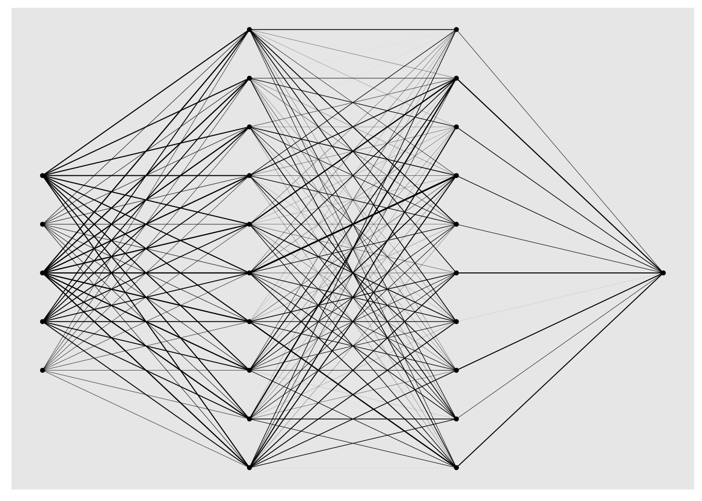
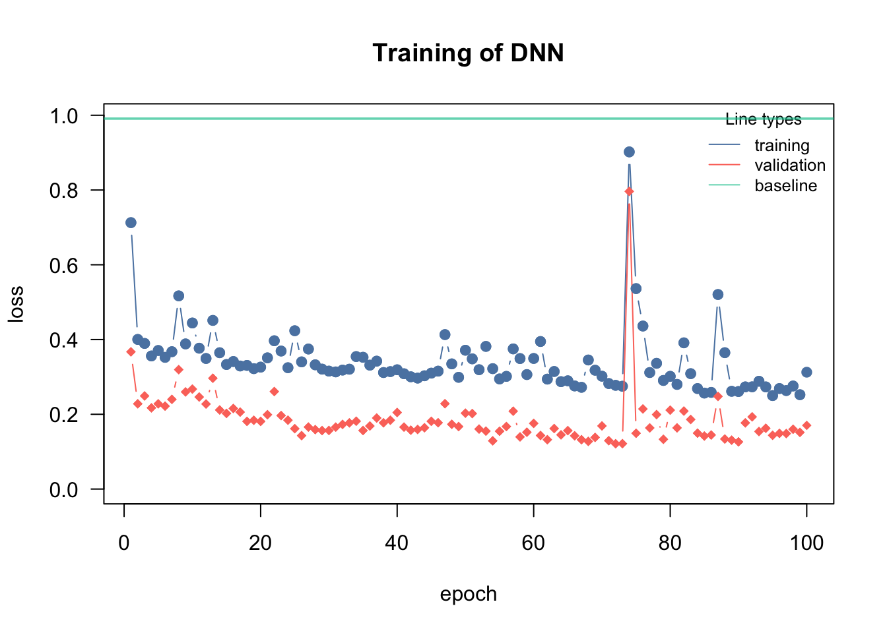
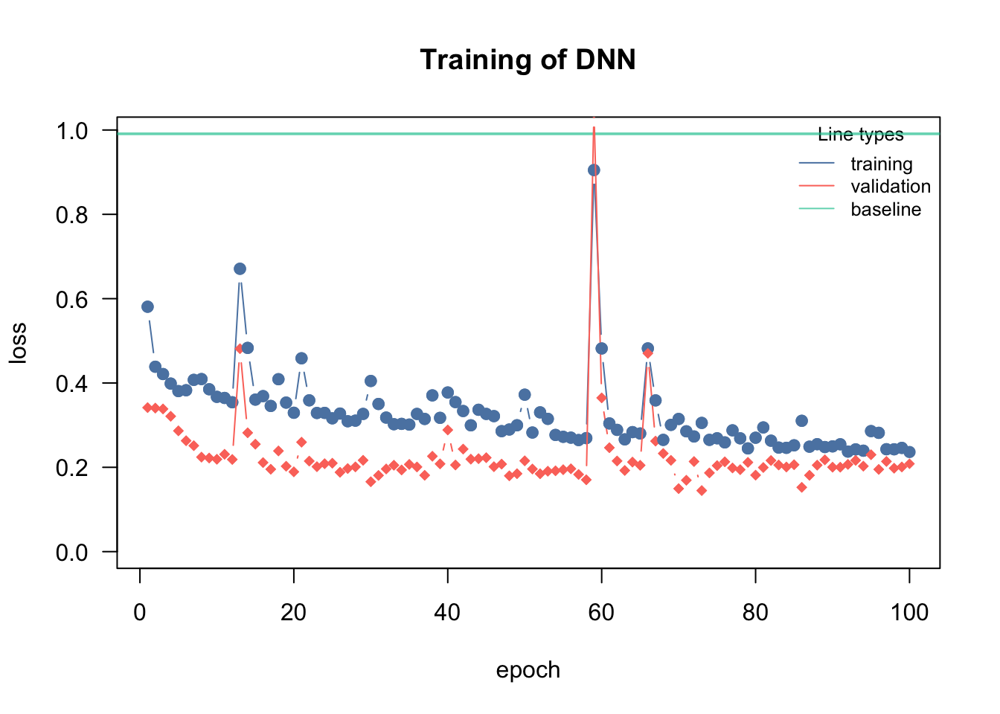
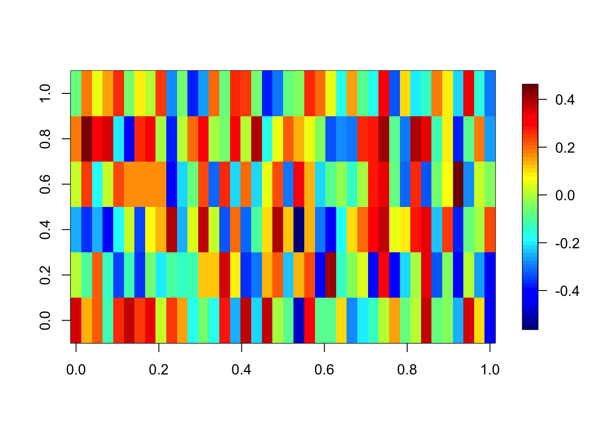

Artificial neural networks are biologically inspired, the idea is that inputs are processed by weights, the neurons, the signals then accumulate at hidden nodes (axioms), and only if the sum of activations of several neurons exceed a certain threshold, the signal will be passed on.
library(cito)
cito allows us to fit fully-connected neural networks within one line of code. When we come to other tasks such as image recognition we have to use frameworks with higher flexibility such as keras or torch.
Neural networks are harder to optimize (hey are optimized via backpropagation and gradient descent) and a few hyperparameters that control the optimization should be familiar:
Hyperparameter
Meaning
Range
learning rate
the step size of the parameter updating in the iterative optimization routine, if too high, the optimizer will step over good local optima, if too small, the optimizer will be stuck in a bad local optima
[0.00001, 0.5]
batch size
NNs are optimized via stochastic gradient descent, i.e. only a batch of the data is used to update the parameters at a time
Depends on the data:
10-250
epoch
the data is fed into the optimization in batches, once the entire data set has been used in the optimization, the epoch is complete (so e.g. n = 100, batch size = 20, it takes 5 steps to complete an epoch)
100+ (use early stopping)
Example:
data = airquality[complete.cases(airquality),]data =scale(data)model =dnn(Ozone~., hidden =c(10L, 10L), # Architecture, number of hidden layers and nodes in each layeractivation =c("selu", "selu"), # activation functions for the specific hidden layerloss ="mse", lr =0.01, data = data, epochs = 150L, verbose =FALSE)plot(model)

summary(model)
Deep Neural Network Model summary
Model generated on basis of:
Feature Importance:
variable importance
1 Solar.R 1.211966
2 Wind 2.090089
3 Temp 2.980428
4 Month 1.094125
5 Day 1.058092
The architecture of the NN can be specified by the hidden argument, it is a vector where the length corresponds to the number of hidden layers and value of entry to the number of hidden neurons in each layer (and the same applies for the activation argument that specifies the activation functions in the hidden layers). It is hard to make recommendations about the architecture, a kind of general rule is that the width of the hidden layers is more important than the depth of the NN.
The loss function has to be adjusted to the response type:
Loss
Type
Example
mse (mean squared error)
Regression
Numeric values
mae (mean absolute error)
Regression
Numeric values, often used for skewed data
softmax
Classification, multi-label
Species
cross-entropy
Classification, binary or multi-class
Survived/non-survived, Multi-species/communities
binomial
Classification, binary or multi-class
Binomial likelihood
poisson
Regression
Count data
Importance of the learning rate
cito visualizes the training (see graphic). The reason for this is that the training can easily fail if the learning rate (lr) is poorly chosen. If the lr is too high, the optimizer “jumps” over good local optima, while it gets stuck in local optima if the lr is too small:
model =dnn(Ozone~., hidden =c(10L, 10L), activation =c("selu", "selu"), loss ="mse", lr =0.4, data = data, epochs = 150L, verbose =FALSE)

If too high, the training will either directly fail (because the loss jumps to infinity) or the loss will be very wiggly and doesn’t decrease over the number of epochs.
model =dnn(Ozone~., hidden =c(10L, 10L), activation =c("selu", "selu"), loss ="mse", lr =0.0001, data = data, epochs = 150L, verbose =FALSE)
If too low, the loss will be very wiggly but doesn’t decrease.
Learning rate scheduler
Adjusting / reducing the learning rate during training is a common approach in neural networks. The idea is to start with a larger learning rate and then steadily decrease it during training (either systematically or based on specific properties):
model =dnn(Ozone~., hidden =c(10L, 10L), activation =c("selu", "selu"), loss ="mse", lr =0.1,lr_scheduler =config_lr_scheduler("step", step_size =30, gamma =0.1),# reduce learning all 30 epochs (new lr = 0.1* old lr)data = data, epochs = 150L, verbose =FALSE)
7.1 Regularization
We can use \(\lambda\) and \(\alpha\) to set L1 and L2 regularization on the weights in our NN:
model =dnn(Ozone~., hidden =c(10L, 10L), activation =c("selu", "selu"), loss ="mse", lr =0.05,lambda =0.1,alpha =0.5,lr_scheduler =config_lr_scheduler("step", step_size =30, gamma =0.1),# reduce learning all 30 epochs (new lr = 0.1* old lr)data = data, epochs = 150L, verbose =FALSE)

summary(model)
Deep Neural Network Model summary
Model generated on basis of:
Feature Importance:
variable importance
1 Solar.R 1.175315
2 Wind 1.857567
3 Temp 2.641816
4 Month 1.014699
5 Day 1.007481
Be careful that you don’t accidentally set all weights to 0 because of a too high regularization. We check the weights of the first layer:
fields::image.plot(coef(model)[[1]][[1]]) # weights of the first layer
7.2 Exercise
Question: Regularization
Change the following code to a pure L1 regularization and try different \(\lambda\) values, what happens to the weights of the first layer?
model =dnn(Ozone~., hidden =c(40L, 40L), activation =c("selu", "selu"), loss ="mse", lr =0.05,lambda =0.0,alpha =0.5,lr_scheduler =config_lr_scheduler("step", step_size =30, gamma =0.1),# reduce learning all 30 epochs (new lr = 0.1* old lr)data = data, epochs = 150L, verbose =FALSE)
fields::image.plot(coef(model)[[1]][[1]])

\(\alpha = 0.0\) means that only L1 is used: Weak regularization
model =dnn(Ozone~., hidden =c(40L, 40L), activation =c("selu", "selu"), loss ="mse", lr =0.05,lambda =0.01,alpha =0.0,lr_scheduler =config_lr_scheduler("step", step_size =30, gamma =0.1),# reduce learning all 30 epochs (new lr = 0.1* old lr)data = data, epochs = 150L, verbose =FALSE, plot =FALSE)fields::image.plot(coef(model)[[1]][[1]])
Strong regularization
model =dnn(Ozone~., hidden =c(40L, 40L), activation =c("selu", "selu"), loss ="mse", lr =0.05,lambda =0.04,alpha =0.1,lr_scheduler =config_lr_scheduler("step", step_size =30, gamma =0.1),# reduce learning all 30 epochs (new lr = 0.1* old lr)data = data, epochs = 150L, verbose =FALSE, plot=FALSE)fields::image.plot(coef(model)[[1]][[1]])
The weights get sparse, i.e. many of them are zero.
Question: Hyperparameter tuning - Titanic dataset
Combing back to the titanic dataset from yesterday, we want to optimize \(\lambda\) using nested CV:
Use CV to optimize the \(\lambda\) parameter
Train model with the \(\lambda\) parameter with the highest AUC
Make predictions for the new observations and submit them
Bonus:
Tune the architecture! (depth and width of the NN via the hidden argument)
The following objects are masked from 'package:stats':
filter, lag
The following objects are masked from 'package:base':
intersect, setdiff, setequal, union
library(missRanger)data(titanic_ml)data = titanic_mldata = data %>%select(survived, sex, age, fare, pclass)data[,-1] =missRanger(data[,-1], verbose =0)data_sub = data %>%mutate(age = scales::rescale(age, c(0, 1)),fare = scales::rescale(fare, c(0, 1))) %>%mutate(sex =as.integer(sex) - 1L,pclass =as.integer(pclass - 1L))data_new = data_sub[is.na(data_sub$survived),] # for which we want to make predictions at the enddata_obs = data_sub[!is.na(data_sub$survived),] # data with known response
prediction_ensemble =sapply(1:nrow(results), function(i) { model =dnn(survived~., hidden =c(10L, 10L), activation =c("selu", "selu"), loss ="binomial", lr =0.05,lambda = results$lambda[i],alpha =0.1,lr_scheduler =config_lr_scheduler("step", step_size =10, gamma =0.1),data = data_sub[is.na(data_sub$survived),] , epochs = 40L, verbose =FALSE, plot=FALSE)return(predict(model, data_obs)[,1]) })# Single predictions from the model with the highest AUC:write.csv(data.frame(y = prediction_ensemble[,which.max(results$AUC)]), file ="Max_titanic_best_model.csv")# Single predictions from the ensemble model:write.csv(data.frame(y =apply(prediction_ensemble, 1, mean)), file ="Max_titanic_ensemble.csv")
prediction_ensemble =sapply(1:nrow(results), function(i) { model =dnn(survived~., hidden =rep(results$nodes[i], results$hidden[i]), activation =rep("selu", results$hidden[i]), loss ="binomial", lr =0.05,lambda = results$lambda[i],alpha = results$alpha[i],lr_scheduler =config_lr_scheduler("step", step_size =10, gamma =0.1),data = data_sub[is.na(data_sub$survived),] , epochs = 40L, verbose =FALSE, plot=FALSE)return(predict(model, data_obs)[,1]) })# Single predictions from the model with the highest AUC:write.csv(data.frame(y = prediction_ensemble[,which.max(results$AUC)]), file ="Max_titanic_best_model.csv")# Single predictions from the ensemble model:write.csv(data.frame(y =apply(prediction_ensemble, 1, mean)), file ="Max_titanic_ensemble.csv")
see Section A.2 for more information about the dataset.
Prepare the data:
library(EcoData)library(missRanger)library(dplyr)data(plantPollinator_df)plant_poll = plantPollinator_dfplant_poll_imputed = plant_poll %>%select(diameter, corolla, tongue, body, interaction, colour, nectar, feeding, season)# Remove response variable interactionplant_poll_imputed = missRanger::missRanger(data = plant_poll_imputed %>%select(-interaction), verbose =0)# scale numeric variablesplant_poll_imputed[,sapply(plant_poll_imputed, is.numeric)] =scale(plant_poll_imputed[,sapply(plant_poll_imputed, is.numeric)])# Add response back to the dataset after the imputatiobplant_poll_imputed$interaction = plant_poll$interactionplant_poll_imputed$colour =as.factor(plant_poll_imputed$colour)plant_poll_imputed$nectar =as.factor(plant_poll_imputed$nectar)plant_poll_imputed$feeding =as.factor(plant_poll_imputed$feeding)plant_poll_imputed$season =as.factor(plant_poll_imputed$season)data_new = plant_poll_imputed[is.na(plant_poll_imputed$interaction), ] # for which we want to make predictions at the enddata_obs = plant_poll_imputed[!is.na(plant_poll_imputed$interaction), ]# data with known responsedim(data_obs)
[1] 14690 9
The dataset is large! More than 10,000 observations. For now, let’s switch to a simple holdout strategy for validating our model (e.g. use 80% of the data to train the model and 20% of the data to validate your model.
Moreover:
table(data_obs$interaction)
0 1
14095 595
The data is strongly imbalanced, i.e. many 0s but only a few 1. There are different strategies how to deal with that, for example oversampling the 1s or undersampling the 0s.